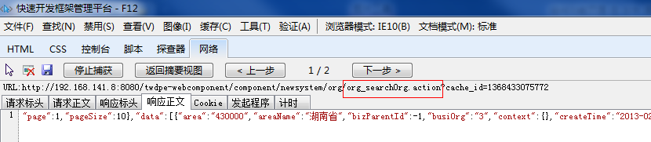
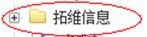

现在结合快框组件中功能页面（组织管理）做示例：
组件版本：1.5
IE版本： IE10
组织管理页面：orgmanage.html
参考demo：http://192.168.141.8:8080/twdpe-webcomponent/
将结合快框组件中功能页面（组织管理）做示例：
2、调试讲解
2.1打开IE调试工具
开发人员工具就是为前端开发人员开发页面而设计的工具。 提供一系列的小工具，让你可以方便的查找、调试页面的BUG，包括HTML代码、CSS代码和JavaScript代码。
打开方法：
1．在IE浏览器直接按 “F12”；
2．在IE浏览器菜单栏“工具”中选择“F12开发人员工具”。
2.2监控Form、DataGrid
2.2.1查看DataGrid请求initSource的数据访问
- a.启动调试
- b.并打开网络的捕获功能后，再刷新一次组织首页面
- c.在网络视图中可以查看到grid列表的默认请求：
- d.双击可看详细信息，其中“响应正文”中是后台返回至前台的json对象
2.2.2查看Form联动DataGrid
- a.在Form中输入条件查询:
- b.在“查询”按钮的点击事件方法中加入断点监控：
通过选中变量右键“添加监视”，即可在调试工具的监视选项卡中看变量的值、类型、结构及自身已封装的方法等
- c.查看参数的传递
- d.查看Form请求DataGrid后的后台数据返回

- e.前台展现
2.3监控Tree的初始加载和异步加载
2.3.1查看Tree的初始化加载
- a.在首次打组织首页面加载orgmanage.html时，还有一条请求是Tree的initSource请求
- b.Tree数据返回控件自动完成绑定
- c.查看树节点元素
单击选择元素，选中后，用鼠标点击页面元素时，即可选中该元素，并且会列出该元素的DOM结果、CSS样式信息、控件的value值、id值等等。
直接修改页面元素的样式信息，便可以看到修改后的效果，如把ui-tree的font-size由12px改为24px
改完效果
同时字体、颜色、边框、边距都可以改。
2.3.2查看Tree的异步加载
所谓异步加载不是一次加载全部数据，而是点击节点+号才延后加载的一种提高效率和用户体验的一种加载方式。如下图：当点击的+号时，才触发Tree控件的asyncDataSource请求
- a.树前台展现
- b.asyncDataSource请求数据返回查看
- c.异步树需要同时满足第一次加载的数据源节点数据里包含asyn:true并且配置了asyncDataSource两个要求才能实现异步。
2.3.3查看Tree节点联动DataGrid
a.通过点组织树上的节点并作为条件完成DataGrid记录的 查询过滤
b.查看节点点击事件
点击根节点—所有组织，利用工具查看方法中的参数值
c.DataGrid刷新方法的使用
- d.请求正文和数据返回
- e.同时在断点调试可以查看控件的属性方法，比如刚刚在刷新DataGrid时：
2.4监控对话框打开传参和关闭返回
2.
2.4.1 查看点击组织页面操作列的修改按扭后对话框创建过程
a.点击修改按钮
b.监控按钮的点击事件，其中createWindow是封闭的业务方法和组件无关
c.window控件创建方法需要配置好一系列的属性参数，在下图监控中可以看到参数对象config结构和值
- d.修改页面创建成功，如图。其宽度width为conifg中设置的604px。
- e.在监视中修改“”或在控制台中运行脚本config.width=302后，可以看到打开的对话框宽度为302px，小了一半。
f．修改页面点保存后表单回调结果的监控
以下是表单定义的回调事件的响应方法
并可以从指定返回result中查看后台的处理结果